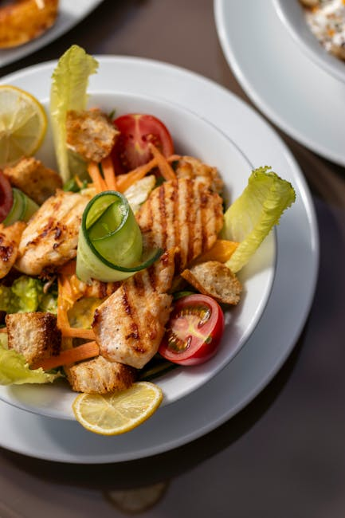

← Back to all nutrition guides | About Our Content
How To Eat Healthy At Fast Food Restaurants
Reviewed by The Today's Food Coach Team
Our team of nutrition researchers and AI specialists ensures every guide is accurate and practical.
A realistic guide for busy professionals over 40.
Eating healthy at fast food restaurants can seem challenging, especially for men aged 40–65 looking to lose weight and improve their eating habits without the burden of calorie counting. Fast food establishments have long been associated with unhealthy eating, often laden with calories and unhealthy ingredients. However, with some mindful choices, it is entirely possible to enjoy a meal that aligns with your health goals. By focusing on making better selections, you can enjoy the convenience of fast food while supporting your weight loss efforts and overall wellness. This article provides straightforward strategies to navigate fast food menus without sacrificing flavor or satisfaction.
Want a personalized version of this strategy?
Try the AI Food Coach
Why How To Eat Healthy At Fast Food Restaurants Matters
Maintaining a healthy diet is particularly important as men age, especially between 40 and 65. Metabolism slows down, making weight management more challenging. Furthermore, unhealthy eating habits can lead to chronic diseases that become more prevalent in this age group, such as heart disease, diabetes, and high blood pressure. By making intentional food choices at fast food restaurants, you can help mitigate these risks while still enjoying the ease of quick dining options. Eating healthy doesn’t require complicated meal planning or calorie counting, but it does require awareness of your choices. This mindfulness can lead to better nutrition, sustained energy levels, and ultimately a healthier lifestyle. Moreover, choosing healthier fast food options can positively influence your overall dietary patterns, making it easier to stick to healthier habits long-term. Therefore, understanding how to make healthy choices in fast food settings is crucial for achieving your weight loss goals and promoting better health as you age.
Simple Strategy
- Opt for grilled options instead of fried foods to reduce unhealthy fats.
- Choose smaller portion sizes, such as a junior or snack-sized item, to avoid excess calories.
- Fill up on salads or vegetable sides to increase nutrient intake without adding too many calories.
These strategies work best when personalized to your lifestyle and goals.
Build Your Personalized Nutrition Plan
Most people know what foods are healthy. The hard part is knowing what to eat today. Today's Food Coach creates a simple, personalized daily plan based on your goals and lifestyle.
Start Your PlanExample Day of Eating
For breakfast, you might choose an egg and cheese sandwich on whole-grain bread with a side of fruit. For lunch, a grilled chicken salad with vinaigrette offers protein and fiber without excessive calories. Dinner could be a small burger with a veggie side instead of fries, providing satisfaction while keeping health in check.
Common Mistakes
- Assuming all salads are healthy without checking dressings or toppings.
- Oversizing portions by ordering large versions of meals.
- Ignoring beverages and opting for sugary sodas instead of water.
Practical Tips
- Always read the nutrition info available at the restaurant.
- Customize your order by asking for less sauce or cheese.
- Share meals or take half home to avoid overeating.
Frequently Asked Questions
Can I really eat healthy at fast food restaurants?
Yes, by making informed choices, you can find healthier options even at fast food establishments.
What should I look for on the menu?
Look for grilled items, salads with light dressings, and whole-grain options.
Is it possible to lose weight while eating out often?
Absolutely, as long as you focus on portion control and balanced meal choices.
Related Nutrition Guides
- How To Stop Stress Eating At Night
- How To Eat Out And Still Lose Weight
- Healthy Takeout Meals For Weight Loss
Try Today's Food Coach
Generate a personalized meal strategy based on your lifestyle and goals.
Try the AI Food Coach